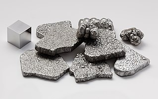

Размер текста:
Инвертировать цвета
Везде Comic Sans
Ведомости
История железа
Железо

Железо как инструментальный материал известно с
древнейших
времён. Самые древние изделия из железа, найденные
при археологических раскопках,
датируются
4-м тысячелетием до н. э. и относятся к
древнешумерской
и древнеегипетской цивилизациям.
Это изготовленные
из метеоритного железа, то есть сплава железа и никеля
(содержание
последнего колеблется от 5 до 30 %), украшения
из египетских
гробниц (около 3800 года до н. э.) и кинжал из шумерского
города Ура (около 3100 года до н. э.). От небесного
происхождения
метеоритного железа происходит, видимо, одно из
названий железа в греческом и латинском языках:
«сидер» (что значит «звёздный»).
Первыми освоили метод выплавки железа хатты. На это
указывает
древнейшее (2-е тысячелетие до н. э.)
упоминание
железа в текстах хеттов, основавших свою империю
на территории
хаттов (современной Анатолии в Турции).
Аристотель описал их способ получения стали:
«халибы несколько раз
промывали речной песок их страны —
тем самым выделяя чёрный шлих (тяжёлая фракция,
состоящая в основном из магнетита и
гематита), и плавили в печах; полученный таким
образом металл имел серебристый цвет и был
нержавеющим».
В качестве сырья для выплавки стали использовались
магнетитовые
пески, которые часто встречаются по всему побережью
Чёрного моря: эти магнетитовые пески состоят из
смеси мелких зёрен магнетита, титано-магнетита или
ильменита, и обломков других пород, так что
выплавляемая
халибами сталь была легированной, и имела
превосходные
свойства. Такой своеобразный способ получения
железа говорит о том, что халибы лишь распространили
железо как технологический материал, но их
способ
не мог быть методом повсеместного
промышленного
производства железных изделий. Однако их
производство
послужило толчком для дальнейшего развития
металлургии железа.
Геохимия железа
Железо — один из самых распространённых элементов в
Солнечной
системе, особенно на планетах земной группы, в
частности,
на Земле. Значительная часть железа планет земной
группы находится в ядрах планет, где его содержание, по
оценкам,
около 90 %. Содержание железа в земной коре составляет 5 %,
а в мантии около 12 %. Из металлов железо уступает по
распространённости
в коре только алюминию. При этом в ядре находится около 86 %
всего железа, а в мантии 14 %. Содержание железа
значительно
повышается в изверженных породах основного
состава, где оно связано с пироксеном, амфиболом,
оливином
и биотитом. В промышленных концентрациях
железо накапливается в течение
почти всех экзогенных
и эндогенных процессов, происходящих в
земной коре. В морской воде железо содержится в очень малых
количествах
0,002—0,02 мг/л. В речной воде его концентрация
значительно
выше — 2 мг/л.
Важнейшая геохимическая особенность
железа — наличие у него нескольких степеней окисления.
Железо в нейтральной форме — металлическое — слагает
ядро Земли, возможно, присутствует в мантии и очень редко
встречается в земной коре. Закисное железо FeO —
основная
форма нахождения железа в мантии и земной коре. Окисное
железо Fe2O3 характерно для самых верхних, наиболее
окисленных,
частей земной коры, в частности, осадочных пород.
По кристаллохимическим свойствам ион Fe2+
близок
к ионам Mg2+ и Ca2+ — другим главным элементам,
составляющим
значительную часть всех земных пород. В силу
кристаллохимического
сходства железо замещает магний и, частично, кальций во
многих
силикатах. При этом содержание железа в минералах
переменного состава обычно увеличивается с
уменьшением
температуры.